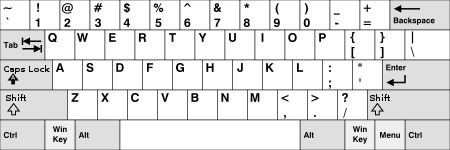
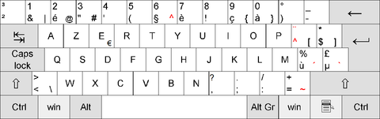
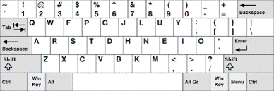
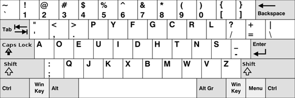

Toetsen indeling.
QWERTY: (referntie naar geschiedenis)
Het eerste toetsenbord ooit gemaakt was de QWERTY-indeling. Het werd ontwikkeld door Christopher Sholes in 1868 en is gebaseerd op de mechanische Remington-typemachine. Het originele toetsenbord had 60 sleutels, waarvan er slechts 48 werden gebruikt. De andere 12 sleutels werden gebruikt voor speciale functies zoals schakelen tussen lettertypen. De indeling van het toetsenbord was bedoeld om de gebruikers te helpen bij het typen door de meest gebruikte lettercombinaties te verdelen over het toetsenbord. Dit gebeurde door de letters op te splitsen in twee blokken, de linker- en rechterhand van de gebruiker. De gebruiker kon dan een snellere typetijd behalen. De QWERTY-indeling wordt nog steeds gebruikt op de meeste toetsenborden en is nu een standaardindeling voor toetsenborden.
QWERTY
AZERTY:
Echter gebruikt men in andere landen ook een andere indeling van het toetsenbord. Zo gebruikt men bijvoorbeeld in Frankrijk en delen van België het AZERTY-toetsenbord. Dit doen ze omdat het op deze manier makkelijker zou zijn om Franse teksten te kunnen typen. Een ander voorbeeld van een alternatief toetsenbord, is het COLEMAK-toetsenbord. Deze vorm is gericht op een comfortabele en ergonomische tikhouding, en is mede daardoor een heel stuk efficiënter dan ons gebruikelijke QWERTY-toetsenbord. Het toetsenbord is overigens vernoemd naar de uitvinder ervan: Shai Coleman.
AZERTY
Colemak:
colemak is een erg nieuwe toetsenindeling en is gemaakt om efficienter te kunnen typen, de maker shai coleman wilde met het maken van het toetsenbord met name zorgen dat het makkelijk te leren was voor mensen die qwerty gewend waren. Er zijn om deze reden maar 17 toetsen verplaats, maar het is wel 20-30% efficiënter dan het qwerty toetsenbord, Ondanks zijn voordelen, is Colemak minder bekend en wordt het minder vaak gebruikt dan de traditionele QWERTY-indeling.
Colemak
Dvorak:
De Dvorak-indeling is een alternatieve toetsenbordindeling die ontwikkeld is om het typen sneller en comfortabeler te maken dan de traditionele QWERTY-indeling. Het is genoemd naar zijn maker, August Dvorak. In tegenstelling tot QWERTY, waarbij de meest gebruikte letters ver van de home-row zijn geplaatst, plaatst de Dvorak-indeling de meest gebruikte letters op de home-row. Dit leidt tot een meer natuurlijke en efficiëntere handbeweging, waardoor minder snel vermoeidheid en blessures ontstaan. Hoewel het Dvorak-toetsenbord in sommige opzichten efficiënter is dan QWERTY, is het minder bekend en wordt het minder vaak gebruikt.
Zoals te zien is, is hoe je je toetsenbord indeelt echt persoonlijk en zal het smaak zijn wat je kiest, er zal dus ook nooit in de wereld 1 toetsenindeling zijn.
Dvorak